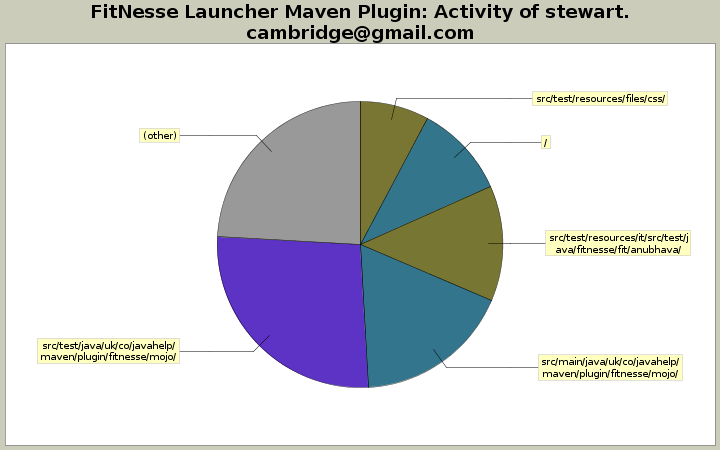

Overview
Examples
Project Documentation



Remove reference to integration tests altogether - just build whole project with -P auto to test example projects
5 lines of code changed in 3 files:
The httpclient dependency included is of version 4.0.2,
which is incompatible with the version of httpclient pulled in
by Xebium in the webapp-example project, which is 4.1.2.
The result is a hidden
NoClassDefFoundError: org/apache/http/conn/scheme/SchemeSocketFactory
which causes Firefox to silently fail to boot from Selenium
and hence no Xebium based tests get run under the RunTestsMojo.
Ultimately we probably need to implement a custom-scoped
org.codehaus.plexus.classworlds.realm.ClassRealm
with which to boot FitNesse, but this is difficult as
the threads it launches are without any public access or interface,
meaning a custom FitNesseMain class might need to be written.
This may be desirable anyway, as we also have trouble identifying
the FitNesse thread to join in WikiMojo.
For now, as reporting functionality is not yet implemented,
an exclusion will do!
http://maven.apache.org/guides/mini/guide-maven-classloading.html
164 lines of code changed in 4 files:
Re-structuring into Maven multi-module project with modules in sub-directories with common parent pom.xml. Integration tests moved out of unit test structure of main plugin, and now exist in their own module which runs after the main plugin and example projects have been built and installed into the local repo. Integration tests currently failing because the webapp example project has trouble booting Firefox. Not sure how this has come about or what has changed, as it seemed to work fine before the re-structuring. Committing now so that it can be worked with on a different system; and besides, it's been sitting uncommitted on this local system far too long now anyway.
29 lines of code changed in 5 files:
Comment out integration tests, in preparation for re-structuring
4 lines of code changed in 2 files:
Some slight refactoring and more unit test coverage
334 lines of code changed in 12 files:
New configureation option - <useProjectDependencies>...</useProjectDependencies>
365 lines of code changed in 5 files:
Skeleton FitNesse HTML Report goal mojo
101 lines of code changed in 3 files:
Upgrade version of fitnesse-launcher-parent to 1.3.0-SNAPSHOT on trunk, following branching of 1.2.x
1 lines of code changed in 1 file:
[maven-release-plugin] prepare for next development iteration
4 lines of code changed in 1 file:
[maven-release-plugin] prepare branch fitnesse-launcher-maven-plugin-1.2.x
3 lines of code changed in 1 file:
[maven-release-plugin] prepare for next development iteration
5 lines of code changed in 1 file:
[maven-release-plugin] prepare release fitnesse-launcher-maven-plugin-1.2.1
5 lines of code changed in 1 file:
Updated FAQ docs for running plugin 'standalone'
10 lines of code changed in 2 files:
Unit test for null check on plugin dependencies lookup, which was preventing plugin running 'standalone'
11 lines of code changed in 2 files:
Null check on plugin dependencies lookup, which was preventing plugin running 'standalone'
10 lines of code changed in 1 file:
Upgraded usage / FAQ documentation
125 lines of code changed in 2 files:
Add maven-overview-plugin to site reports
13 lines of code changed in 1 file:
Correct a few places in test code & comments where FitNesse version was not upgraded from 20111025 to 20121220
4 lines of code changed in 4 files:
[maven-release-plugin] prepare for next development iteration
5 lines of code changed in 1 file:
[maven-release-plugin] prepare release fitnesse-launcher-maven-plugin-1.2.0
6 lines of code changed in 1 file:
(71 more)